Project gallery
Our installations, our equipment, and the marshes we help monitor across 300+ installations since 2009.
Harvest season from the sky
Central Wisconsin cranberry marshes at harvest, the operations we help monitor and control every day.
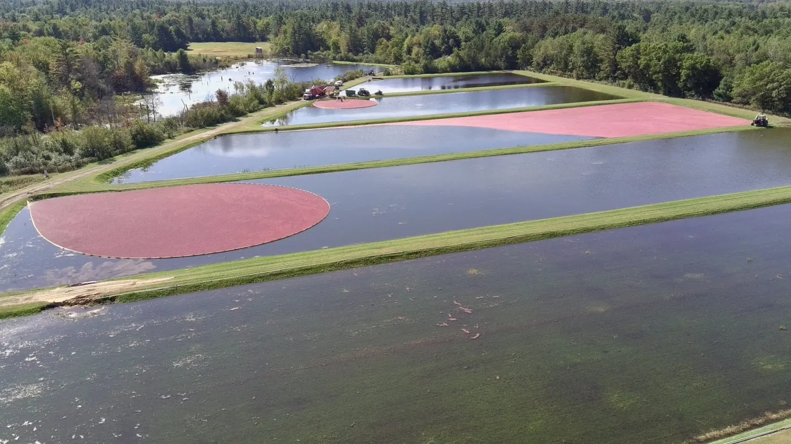
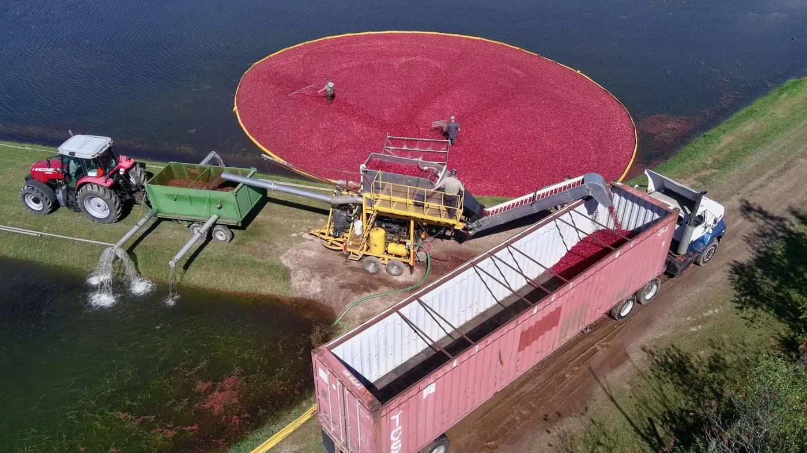
Show 4 more photos
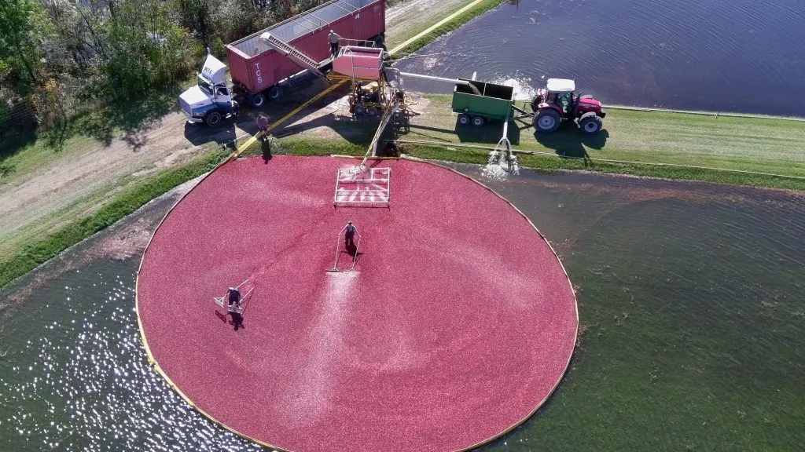
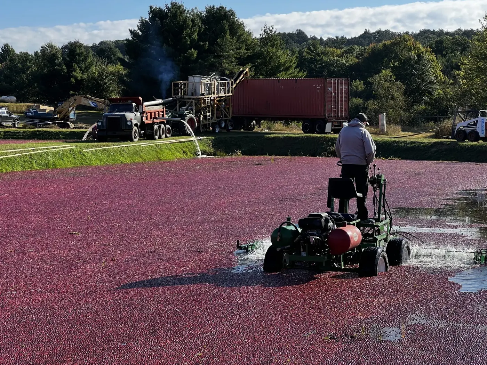
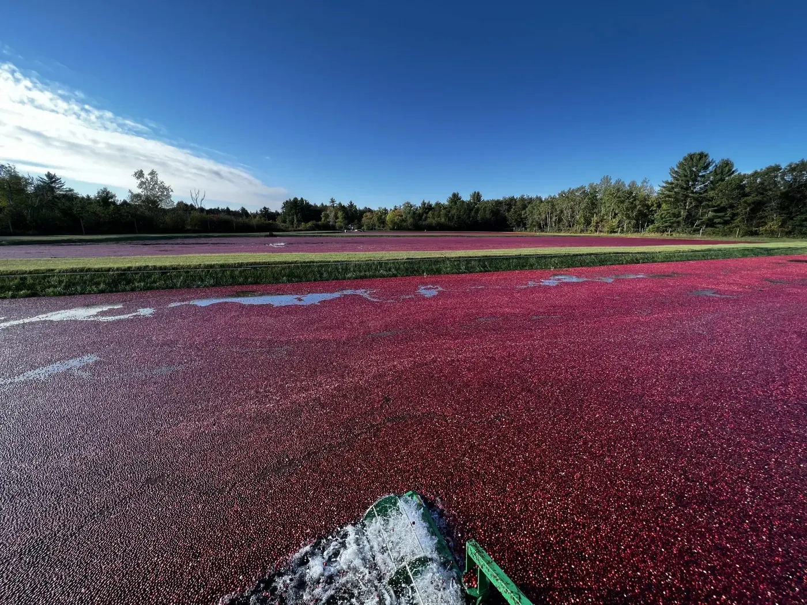
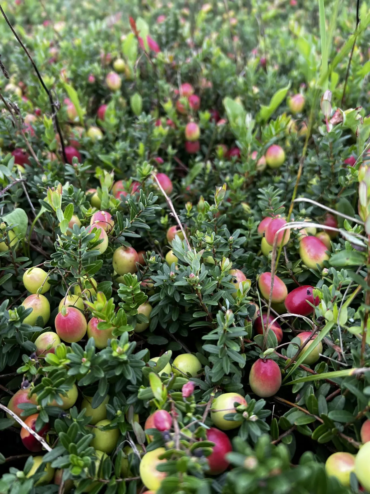
Controls, pumps and sensors


Show 8 more photos


OCS 360 software
Screenshots of our monitoring dashboard.

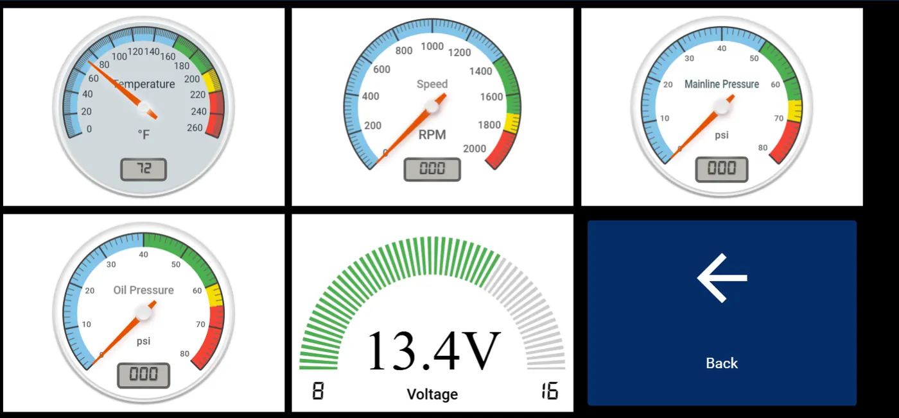
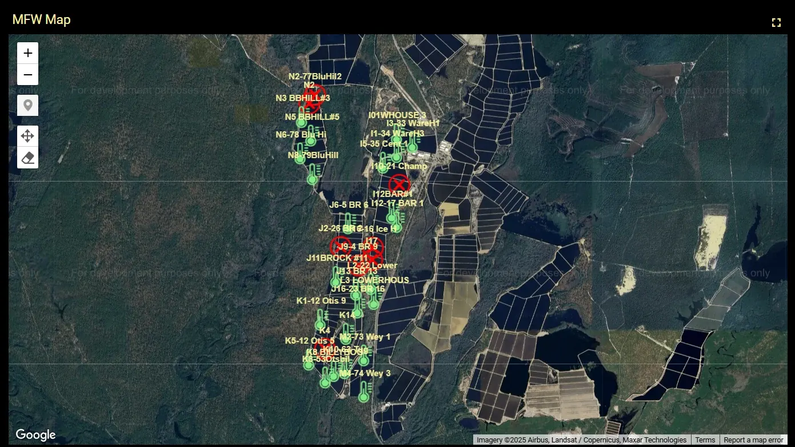
FJ Dynamics precision ag
Auto steer, RTK and grade control equipment we sell, install and support.
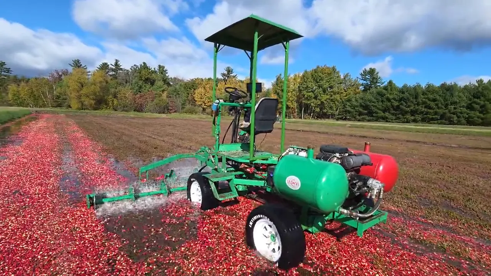
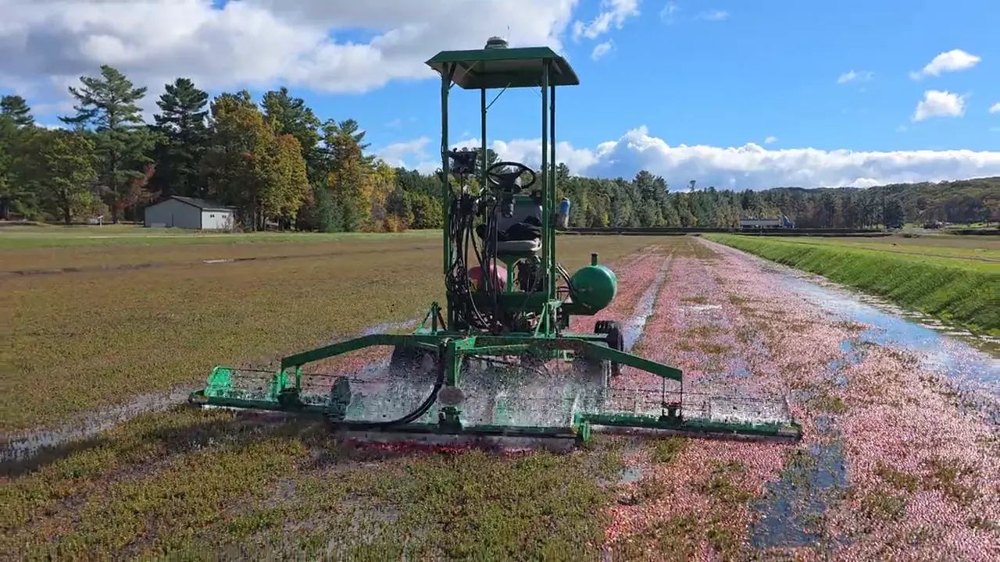
Show 4 more photos


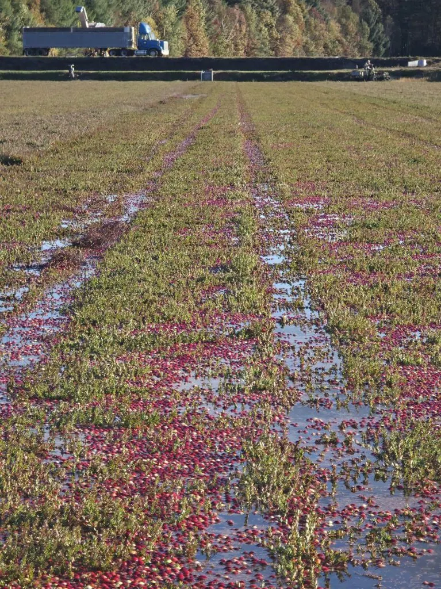
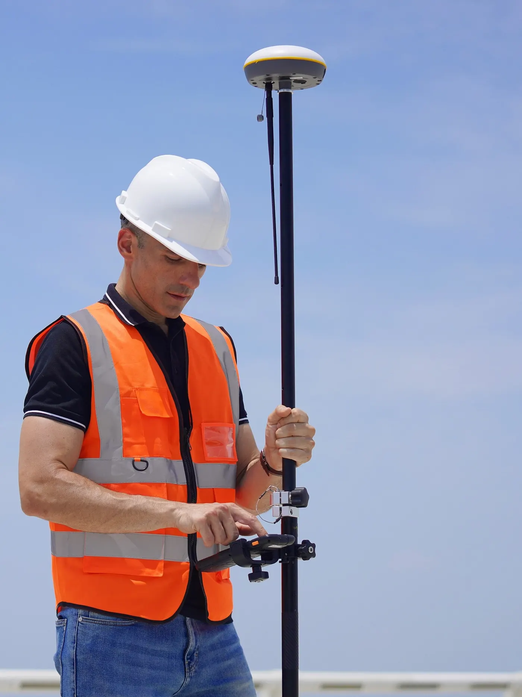
Want to see more?
Schedule a consultation and we’ll show you exactly how our systems work.
- Visit
- 19205 Bittersweet Ave, Warrens, WI 54666
- Hours
- Monday to Friday, 8:00 AM to 5:00 PM. Saturday by appointment.